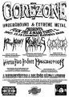

|
 | Életemben egyszer jártam a Kultiplexben, még naiv liberalista időszakomban, amikor még azt hittem, az a hülye, aki a XXI. században tarsolylemezt visel. A szórakozóhelyet formázó intézmény fényes nappal is valami koszlottságot hordozott. Nem olyat, amilyet egy becsületes prolikocsma formáz, valahol a régi Angyalföld mélyén, ahol ugyan reszelni lehet a füstöt, és savanyú sörszag terjeng, de senki nem fog hátbaszúrni, és akár a gyereket is leviheted a haveri körbe, hadd szokja (leszámítva, hogy ma már sikítófrászt kapna ettől a gyámhivatal). Azt a fajta, amerikai filmekből ismerős érzést hordozta, amiről eldobált fecskendők, piszoár mellett fetrengő drogosok és végtelen sunyiság jut az eszembe. Pedig nappal volt, a kerthelyiség még aránylag barátságosnak is tűnt, csak odabent volt egy-két sarok, ami erre emlékeztetett. No meg a moziteremben csak az egyik hangfal szólt, amit jobb helyen igénytelenségnek neveznek.
A Tilos Rádióval is csak egyszer volt találkozásom, amikor 1997 végén meghívtak, hogy beszélgessünk egy demópartyról, amit akkoriban szervezgettem. Pár napra rá a műsorvezető gyerek felhívott az éjszaka közepén, hogy tudok-e "papírt" vagy "csokit" szerezni. Gondolta, most már vagyunk annyira ismeretségben. A Kultiplex és a Tilos Rádió azóta sok mocsoksággal örvendeztette meg hazánkat, a keresztények kiirtásától kezdve Sickratman épületes verséig, mégpedig komoly rendőrségi-bírósági védelem mellett, hiszen gondoljunk csak arra, hogy meghurcolták M. Giorgio Richárdot, aki meg merészelt gyújtani egy izraeli zászlót a Tilos elleni tüntetésen. A nagyjából ezzel egyenértékű ellenoldali megnyilatkozások miatt senki sem állt bíróság elé. A Kultiplexben most hanukazáró party volt. Miért pont az? Hát, mert csak. A buli neve pedig: Fuck the X-Mass Party. Igen, kérem, Baszd Meg a Karácsonyt. Beletéve egy darab extra S, hogy bele lehessen magyarázni, miszerint hogy ez a "mass"-nak, vagyis a karácsony eltömegesedésének, a kommercializálódásnak szól, blablabla, igen, persze, és mi ezt elhisszük ám, hát a kurva anyátok, büdös zsidók. Arról persze mindenkit lebeszélek, hogy ezen szórakozóhely tulajdonosait, illetve a Tilos Rádió valamennyi köcsögét egyenként vadásszuk le, és verjük nyomorékra. Ilyet semmiképpen se tegyél te se, kedves Olvasó. Ellenben megrendezhetnénk a két ünnep között a Fuck the Hamuka partyt, amivel természetesen csakis a közéletben egyre jobban elterjedő hazudozásra szeretnénk felhívni a figyelmet. | | vissza a főoldalra |  |
| 1 2 3 4 5 6 7 8 9 10 11 12 13 14 15 16 17 18 19 20 21 | |  | | | | | | | | | | | | | | | | | | | | 1 2 3 4 5 6 7 8 9 10 11 12 13 14 15 16 17 18 19 20 21 |  |
|


túraszervező
túra-rss
mi ez?

legjobbak
legolvasottabbak
tartalomjegyzék
rss feed

AboryM
Caesar
Count Grishnackh
cscsabi
eürdüngh
Feki
GyalogKakukk
Ishukone
Kadzseszka
LACI1993
Mini
Muska
Rommel
Segi
Takezó
tommylee
vikcee
|
BlogGép 1.1 (C) 2007-2009 tomcat
nem adom
hülye kérdések elott olvasd el a faq-t
minden, a bombagyar.hu-n és aloldalain közölt tartalom újraközléséhez
a szerkesztõk írásos beleegyezése szükséges
az olvasói kommentárok és levelek nem feltétlenül a szerkesztõk véleményét tükrözik
házirend elolvasása